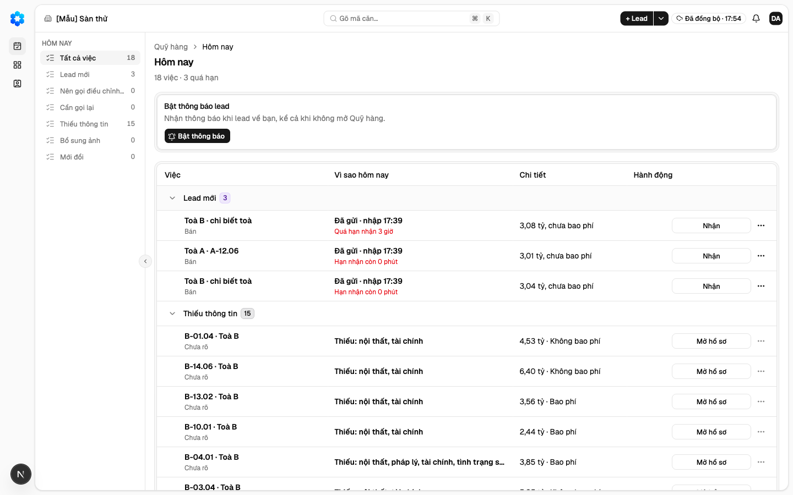
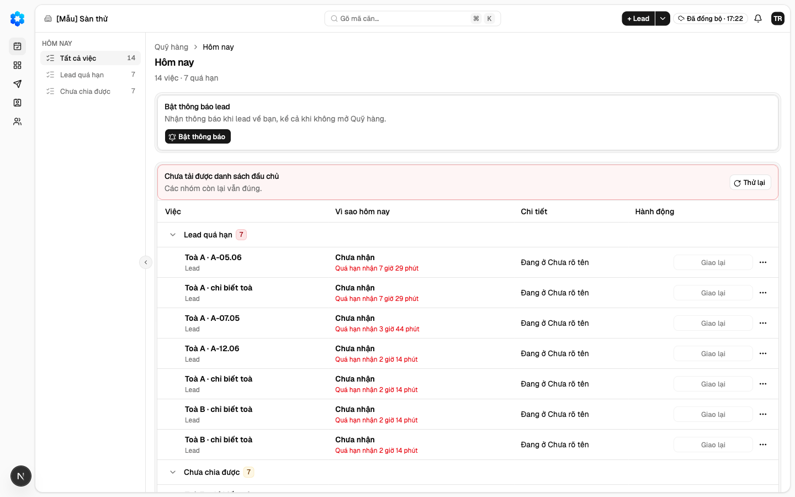
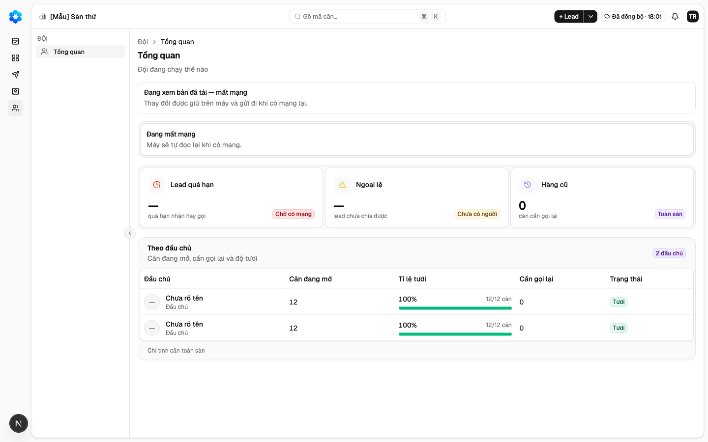
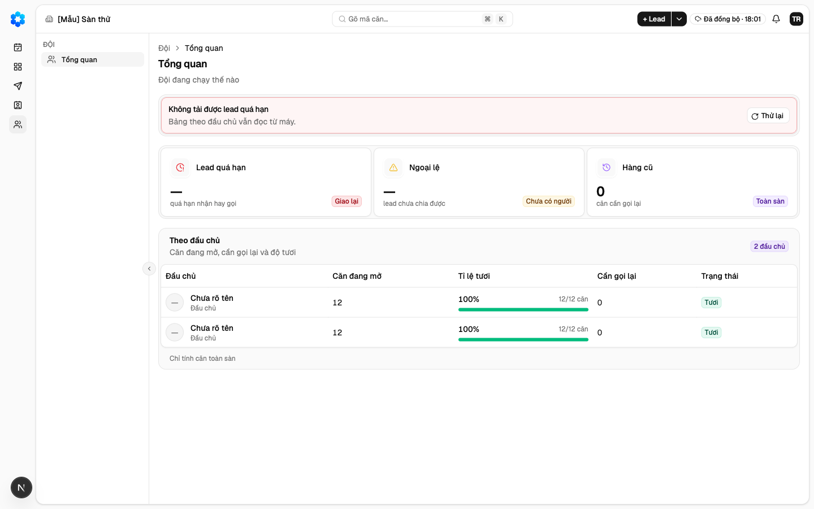
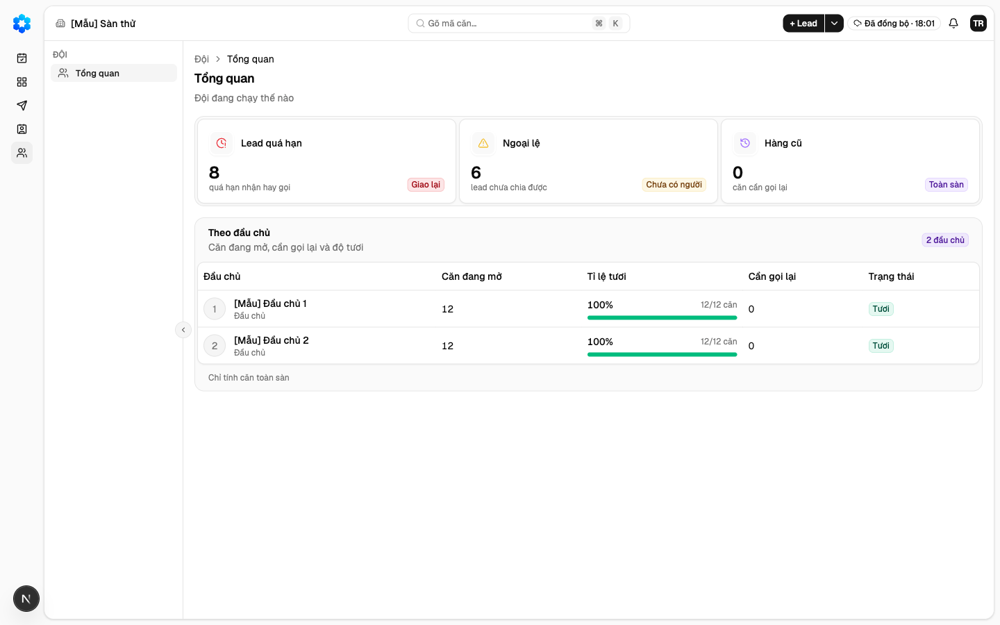
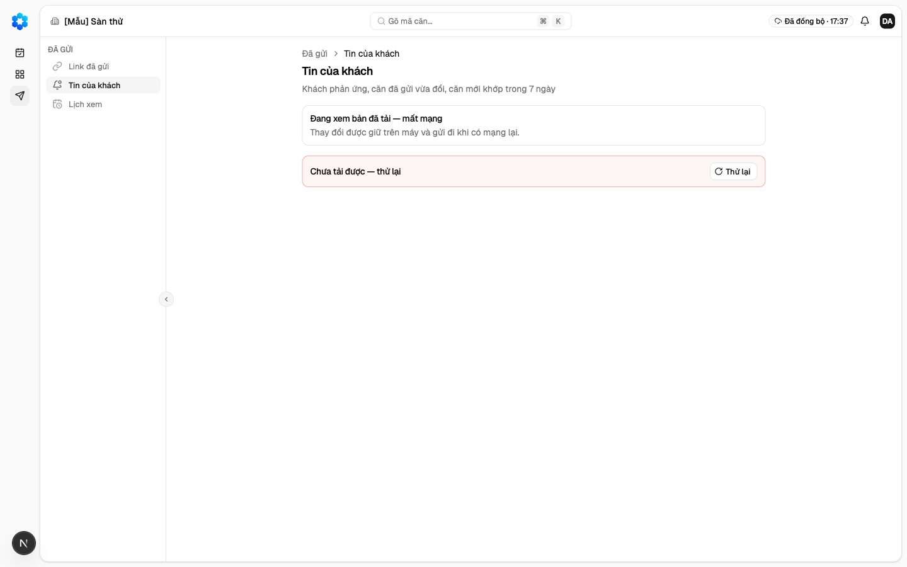
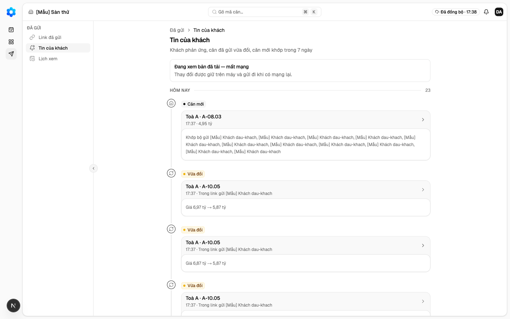

"Khi một phần của Hôm nay, Đội hay tin ở Đã gửi đọc lỗi, màn tự thử lại trước khi báo, báo đúng một câu ở đúng chỗ và không phần nào nói sai về số việc"
Vì sao làm
Khi một phần của Hôm nay đọc lỗi, người dùng thấy đúng một câu lỗi ở đúng chỗ của phần ấy, màn tự thử lại trước khi báo, các phần còn lại giữ nguyên và không phần nào nói sai về số việc; đầu chủ luôn hiện tên người
Đã hứa
- AC-1 — — Không báo lỗi khi không có lỗi.** Given người không có vai Đầu chủ (trưởng nhóm, telesales, đầu khách) · When mở Hôm nay, không
- AC-2 — — Tự hồi lỗi thoáng qua.** Given bộ nhóm (Đầu chủ), danh sách đầu chủ (Hôm nay và Đội) hay hàng đợi ở Đội trả lỗi rồi được · When
- AC-3 — — Danh sách đầu chủ lỗi ở Hôm nay.** Given trưởng nhóm có dòng lead cần giao, danh sách đầu chủ lỗi kéo dài · When mở Hôm nay · Then
- AC-4 — — Đội một vùng một báo lỗi.** Given hàng đợi lỗi, danh sách đầu chủ lỗi, hay cả hai, kéo dài · When mở Đội · Then đúng một khối báo lỗi và
- AC-5 — — Đội mất mạng rồi có lại.** Given Đội đang báo mất mạng · When mạng trở lại · Then màn tự đọc, không còn «Đang mất mạng», không cần tải lại
- AC-6 — — Không có số 0 khi chưa đọc được.** Given có nguồn của người xem đọc hỏng hay mở lúc mất mạng, chưa có việc nào · When nhìn cột thứ hai · Then
- AC-7 — — Mở lúc mất mạng có một câu.** Given mở Hôm nay lúc mất mạng, chưa có việc nào đọc được · When nhìn thân màn · Then có đúng một câu nói chưa đọc
- AC-8 — — «Giao lại» bị từ chối thì báo ở dòng.** Given trưởng nhóm trên máy tính · When bấm «Giao lại», chọn người, máy chủ từ chối · Then câu lỗi hiện
- AC-9 — — Tin của khách ở Đã gửi không treo.** Given lời đọc tin trả 200 mà nội dung hỏng, hay trả lỗi kéo dài · When mở Đã gửi · Tin của khách · Then
- AC-10 — — Một khối báo lỗi, phần đã đúng giữ nguyên.** Given Hôm nay, Đội, tin ở Đã gửi và Lead đã nhập · When một nguồn đọc lỗi kéo dài · Then cả bốn báo bằng
Thiết kế
_acceptance/hom-nay-chiu-loi-tung-phan/design.md
Quyết định
- 2026-11-09 · Máy · approach · S1 — Đã tra tri thức: hom-nay-chiu-loi-tung-phanKho đã khai tri_thuc — bước thiết kế tra trang trước khi chọn.
- 2026-11-09 · Máy · approach · S1 — Thu phạm vi về đúng những gì đo còn trên 5d55d0cc: bỏ A4, A5, A7, A10; giữ phần còn của A3, A6, A8, A9, A11.Giám sát giao đo lại rồi thu phạm vi; kết quả từng mã ở bảng trong opportunity.md.
- 2026-11-09 · Máy · approach · S1 — Nhận vào hàng này hai lỗi chủ kho đã tách khỏi #230 (Giao lại bị từ chối mà màn im; danh sách đầu chủ lỗi mà báo sai) và câu bộ nhóm sai với người không có vai Đầu chủ.Cùng gốc màn nói sai, cùng dòng mã, chưa hàng nào nhận; mở hàng riêng tốn thêm một vòng và hai cổng cho một đoạn sửa nhỏ.
- 2026-11-09 · Máy · approach · S1 — Khối báo lỗi vùng là BaoLoiVung đặt trong trang-thai.tsx, dựng trên TrangThai, áp cho Hôm nay, Đội, tin ở Đã gửi và Lead đã nhập.ADR-0024 chỉ định thành phần chủ của mẫu Lỗi; đặt cùng tệp thì khuôn trang-thai và bản đồ hệ thiết kế không đổi.
- 2026-11-09 · Máy · approach · S1 — Đội là một vùng nên có một khối báo lỗi và một nút Thử lại đọc lại cả hai nguồn; Hôm nay giữ mỗi nguồn một câu.ADR-0024 đặt luật theo vùng; điều kiện bật của hàng nói mỗi nguồn cho danh sách việc của Hôm nay, nơi các nguồn là các nhóm việc riêng.
- 2026-11-09 · Máy · approach · S1 — Đội chỉ coi là mất mạng theo trạng thái trình duyệt, bỏ cờ mất mạng lấy từ lời gọi hỏng; lời gọi hỏng khi trình duyệt còn mạng là lỗi có Thử lại.Đo trên 5d55d0cc: cờ lấy từ lời gọi không sự kiện nào gỡ nên màn đứng Đang mất mạng (Ngoài-16 của #230).
- 2026-11-09 · Máy · descope · S1 — KHÔNG đổi API đội để bỏ tên rỗng, vùng packages/api/src/team không chạm.A7 đã hết ở màn: ba chỗ hiện tên đều thay chữ khi chuỗi rỗng (đo opportunity.md).
- 2026-11-09 · Máy · descope · S1 — bỏ design-pass — không có bố cục, khối hay chữ lớn mới: khối lỗi đúng hình Hôm nay đang chạy, chỉ gom về một thành phần; các bài nhìn màn ở S4 thay cho bản bấm đượcBảng trạng thái trong design.md liệt đủ câu chữ từng trạng thái; hình của TrangThai kind=error đã duyệt qua #230.
- 2026-11-09 · Máy · approach · S1 — Quét độ phủ ngay trong hợp đồng theo ba trục: nguồn đọc, kiểu hỏng, chỗ nói.Không gian ca rời rạc nhiều chiều; mọi ô trỏ tiêu chí trong mục Coverage của contract.md.
- 2026-11-09 · Máy · approach · S1 — Thu phạm vi về đúng những gì đo còn trên 5d55d0cc: bỏ A4, A5, A7, A10; giữ phần còn của A3, A6, A8, A9, A11.Giám sát giao đo lại rồi thu; kết quả từng mã ở bảng trong opportunity.md.
- 2026-11-09 · Máy · approach · S1 — Danh sách đầu chủ đọc lỗi là một nguồn: một câu và một Thử lại ở Hôm nay, không báo sai là sàn chưa có đầu chủ.Phần còn của A6 trên màn mới; điều kiện bật của hàng đòi mỗi nguồn một câu.
- 2026-11-09 · Máy · approach · S1 — Hỏi: có gộp vào hàng này hai lỗi ngoài chín vấn đề (người không có vai Đầu chủ luôn thấy câu báo lỗi bộ nhóm dù không lỗi; Giao lại bị máy chủ từ chối trên máy tính mà màn im) không?Đo được trên bản mới, chưa hàng nào nhận; lỗi Giao lại là lỗi ghi, ngoài câu giao về đọc lỗi; chủ kho từng tách nó khỏi #230 thành việc riêng.
- 2026-11-09 · Máy · approach · S1 — Đội chỉ coi là mất mạng theo trạng thái trình duyệt, như Hôm nay; lời gọi hỏng khi trình duyệt còn mạng là lỗi có Thử lại.Đo trên 5d55d0cc: cờ lấy từ lời gọi làm màn đứng Đang mất mạng (Ngoài-16 của #230); AC-5, E5b bước 3 đo ca còn lại.
- 2026-11-09 · Máy · descope · S1 — bỏ design-pass — một khối lỗi theo đúng khe hành động sẵn có của TrangThai, không bố cục mới; kèm hình khối lỗi hiện tại ở Cổng Phạm vi và đo vị trí nút ở 1440, 375 lúc chấmThành phần gốc đã định khe hành động cho nút Thử lại; ADR-0024 đòi một khối nên Đội và Lead đã nhập về cùng chỗ với Hôm nay.
- 2026-11-09 · Người · seal · gate1 —
- 2026-11-09 · Máy · fix · S4-r1 — Đội luôn đọc lại khi có mạng trở lại, không chỉ khi đang có lỗi đọc.Lượt chấm 1 tìm ra: mở Đội lúc có mạng, đọc được, rồi mất mạng thì không có cờ lỗi nên có mạng lại không đọc, trái AC-5; sửa ở team/dashboard.tsx.
- 2026-11-09 · Máy · fix · S4-r1 — Bài nhìn màn E10d mở trang trong một phiên trình duyệt sạch; lời tiêu chí và kết quả mong đợi giữ nguyên.Lượt 1 E10d đỏ oan: các bài chấm dùng chung một trình duyệt, init-script đặt mất mạng của E5b, E7b còn trên trang nên màn hiện dải mất mạng; cùng mã đó tự thử trên trang mới ra đúng hai câu lỗi, hai Thử lại.
- 2026-11-09 · Máy · revisit · gate2 — Ngoài-1: ghi Known limitsmáy tự định tuyến theo đề xuất S4 «known-limits» — kho bật feature_loop.ngoai_n_tu_dinh_tuyen
- 2026-11-09 · Máy · revisit · gate2 — Ngoài-2: ghi Known limitsmáy tự định tuyến theo đề xuất S4 «known-limits» — kho bật feature_loop.ngoai_n_tu_dinh_tuyen
- 2026-11-09 · Máy · revisit · gate2 — Ngoài-4: ghi Known limitsmáy tự định tuyến theo đề xuất S4 «known-limits» — kho bật feature_loop.ngoai_n_tu_dinh_tuyen
- 2026-11-09 · Máy · revisit · gate2 — Ngoài-5: ghi Known limitsmáy tự định tuyến theo đề xuất S4 «known-limits» — kho bật feature_loop.ngoai_n_tu_dinh_tuyen
Bằng chứng
Các eval
| Eval | Tiêu chí | Loại | Verdict | run_id | verified_at |
|---|---|---|---|---|---|
| E1 | AC-1 | test | PASS (CARRY-FORWARD R1) | minted-hom-nay-chiu-loi-tung-phan-E1-r1 | 2026-11-09T10:15:34Z |
| E1b | AC-1 | ui-check | PASS (CARRY-FORWARD R1) | minted-hom-nay-chiu-loi-tung-phan-E1b-r1 | 2026-11-09T10:15:34Z |
| E2 | AC-2 | test | PASS (CARRY-FORWARD R1) | minted-hom-nay-chiu-loi-tung-phan-E2-r1 | 2026-11-09T10:15:34Z |
| E2b | AC-2 | ui-check | PASS | minted-hom-nay-chiu-loi-tung-phan-E2b-r2 | 2026-11-09T10:52:35Z |
| E3 | AC-3 | test | PASS (CARRY-FORWARD R1) | minted-hom-nay-chiu-loi-tung-phan-E3-r1 | 2026-11-09T10:15:34Z |
| E3b | AC-3 | ui-check | PASS (CARRY-FORWARD R1) | minted-hom-nay-chiu-loi-tung-phan-E3b-r1 | 2026-11-09T10:15:34Z |
| E4 | AC-4 | test | PASS (CARRY-FORWARD R1) | minted-hom-nay-chiu-loi-tung-phan-E4-r1 | 2026-11-09T10:15:34Z |
| E4b | AC-4 | ui-check | PASS | minted-hom-nay-chiu-loi-tung-phan-E4b-r2 | 2026-11-09T10:52:35Z |
| E5 | AC-5 | test | PASS (CARRY-FORWARD R1) | minted-hom-nay-chiu-loi-tung-phan-E5-r1 | 2026-11-09T10:15:34Z |
| E5b | AC-5 | ui-check | PASS | E5b-20261109 | 2026-11-09T10:52:35Z |
| E6 | AC-6 | test | PASS (CARRY-FORWARD R1) | minted-hom-nay-chiu-loi-tung-phan-E6-r1 | 2026-11-09T10:15:34Z |
| E6b | AC-6 | ui-check | PASS (CARRY-FORWARD R1) | minted-hom-nay-chiu-loi-tung-phan-E6b-r1 | 2026-11-09T10:15:34Z |
| E7 | AC-7 | test | PASS (CARRY-FORWARD R1) | minted-hom-nay-chiu-loi-tung-phan-E7-r1 | 2026-11-09T10:15:34Z |
| E7b | AC-7 | ui-check | PASS (CARRY-FORWARD R1) | E7b-20261109 | 2026-11-09T10:15:34Z |
| E8 | AC-8 | ui-check | PASS (CARRY-FORWARD R1) | minted-hom-nay-chiu-loi-tung-phan-E8-r1 | 2026-11-09T10:15:34Z |
| E9 | AC-9 | test | PASS (CARRY-FORWARD R1) | minted-hom-nay-chiu-loi-tung-phan-E9-r1 | 2026-11-09T10:15:34Z |
| E9b | AC-9 | ui-check | PASS (CARRY-FORWARD R1) | minted-hom-nay-chiu-loi-tung-phan-E9b-r1 | 2026-11-09T10:15:34Z |
| E10 | AC-10 | judgment | PASS | — | 2026-11-09T10:52:35Z |
| E10b | AC-10 | script | PASS | minted-hom-nay-chiu-loi-tung-phan-E10b-r2 | 2026-11-09T10:52:35Z |
| E10c | AC-10 | script | PASS | minted-hom-nay-chiu-loi-tung-phan-E10c-r2 | 2026-11-09T10:52:35Z |
| E10d | AC-10 | ui-check | PASS | E10d-20261109 | 2026-11-09T10:52:35Z |
Chi tiết từng eval
PASS (CARRY-FORWARD R1) E1 · test
AC-1: — Không báo lỗi khi không có lỗi.** Given người không có vai Đầu chủ (trưởng nhóm, telesales, đầu khách) · When mở Hôm nay, không
PASS (CARRY-FORWARD R1) E1b · ui-check
AC-1: — Không báo lỗi khi không có lỗi.** Given người không có vai Đầu chủ (trưởng nhóm, telesales, đầu khách) · When mở Hôm nay, không
PASS (CARRY-FORWARD R1) E2 · test
AC-2: — Tự hồi lỗi thoáng qua.** Given bộ nhóm (Đầu chủ), danh sách đầu chủ (Hôm nay và Đội) hay hàng đợi ở Đội trả lỗi rồi được · When
PASS E2b · ui-check
AC-2: — Tự hồi lỗi thoáng qua.** Given bộ nhóm (Đầu chủ), danh sách đầu chủ (Hôm nay và Đội) hay hàng đợi ở Đội trả lỗi rồi được · When


PASS (CARRY-FORWARD R1) E3 · test
AC-3: — Danh sách đầu chủ lỗi ở Hôm nay.** Given trưởng nhóm có dòng lead cần giao, danh sách đầu chủ lỗi kéo dài · When mở Hôm nay · Then
PASS (CARRY-FORWARD R1) E3b · ui-check
AC-3: — Danh sách đầu chủ lỗi ở Hôm nay.** Given trưởng nhóm có dòng lead cần giao, danh sách đầu chủ lỗi kéo dài · When mở Hôm nay · Then


PASS (CARRY-FORWARD R1) E4 · test
AC-4: — Đội một vùng một báo lỗi.** Given hàng đợi lỗi, danh sách đầu chủ lỗi, hay cả hai, kéo dài · When mở Đội · Then đúng một khối báo lỗi và
PASS E4b · ui-check
AC-4: — Đội một vùng một báo lỗi.** Given hàng đợi lỗi, danh sách đầu chủ lỗi, hay cả hai, kéo dài · When mở Đội · Then đúng một khối báo lỗi và
PASS (CARRY-FORWARD R1) E5 · test
AC-5: — Đội mất mạng rồi có lại.** Given Đội đang báo mất mạng · When mạng trở lại · Then màn tự đọc, không còn «Đang mất mạng», không cần tải lại
PASS E5b · ui-check
AC-5: — Đội mất mạng rồi có lại.** Given Đội đang báo mất mạng · When mạng trở lại · Then màn tự đọc, không còn «Đang mất mạng», không cần tải lại




PASS (CARRY-FORWARD R1) E6 · test
AC-6: — Không có số 0 khi chưa đọc được.** Given có nguồn của người xem đọc hỏng hay mở lúc mất mạng, chưa có việc nào · When nhìn cột thứ hai · Then
PASS (CARRY-FORWARD R1) E6b · ui-check
AC-6: — Không có số 0 khi chưa đọc được.** Given có nguồn của người xem đọc hỏng hay mở lúc mất mạng, chưa có việc nào · When nhìn cột thứ hai · Then
PASS (CARRY-FORWARD R1) E7 · test
AC-7: — Mở lúc mất mạng có một câu.** Given mở Hôm nay lúc mất mạng, chưa có việc nào đọc được · When nhìn thân màn · Then có đúng một câu nói chưa đọc
PASS (CARRY-FORWARD R1) E7b · ui-check
AC-7: — Mở lúc mất mạng có một câu.** Given mở Hôm nay lúc mất mạng, chưa có việc nào đọc được · When nhìn thân màn · Then có đúng một câu nói chưa đọc
PASS (CARRY-FORWARD R1) E8 · ui-check
AC-8: — «Giao lại» bị từ chối thì báo ở dòng.** Given trưởng nhóm trên máy tính · When bấm «Giao lại», chọn người, máy chủ từ chối · Then câu lỗi hiện
PASS (CARRY-FORWARD R1) E9 · test
AC-9: — Tin của khách ở Đã gửi không treo.** Given lời đọc tin trả 200 mà nội dung hỏng, hay trả lỗi kéo dài · When mở Đã gửi · Tin của khách · Then
PASS (CARRY-FORWARD R1) E9b · ui-check
AC-9: — Tin của khách ở Đã gửi không treo.** Given lời đọc tin trả 200 mà nội dung hỏng, hay trả lỗi kéo dài · When mở Đã gửi · Tin của khách · Then



PASS E10 · judgment
AC-10: — Một khối báo lỗi, phần đã đúng giữ nguyên.** Given Hôm nay, Đội, tin ở Đã gửi và Lead đã nhập · When một nguồn đọc lỗi kéo dài · Then cả bốn báo bằng
PASS E10b · script
AC-10: — Một khối báo lỗi, phần đã đúng giữ nguyên.** Given Hôm nay, Đội, tin ở Đã gửi và Lead đã nhập · When một nguồn đọc lỗi kéo dài · Then cả bốn báo bằng
18 tệp giao diện ngoài bản đồ
PASS E10c · script
AC-10: — Một khối báo lỗi, phần đã đúng giữ nguyên.** Given Hôm nay, Đội, tin ở Đã gửi và Lead đã nhập · When một nguồn đọc lỗi kéo dài · Then cả bốn báo bằng
(không in dòng nào)
PASS E10d · ui-check
AC-10: — Một khối báo lỗi, phần đã đúng giữ nguyên.** Given Hôm nay, Đội, tin ở Đã gửi và Lead đã nhập · When một nguồn đọc lỗi kéo dài · Then cả bốn báo bằng
Eval không phân biệt (Analyst)
Vòng verify
- Round 1: E10d không đạt và có một phát hiện trong hợp đồng ở AC-5 (Đội không đọc lại khi có mạng nếu màn đang có số) — sửa ở commit 3cb2bd63 (`useKhiCoMangLai(docLai)`) và thêm bước vào E10d. Trả về triển khai.
- Round 2: E2b, E4b, E5b, E10b, E10c, E10d và các lệnh suite chạy lại trên c3a87587 và đạt; các eval còn lại mang sang từ round 1 vì delta không chạm paths của chúng. Phán quyết PASS.
Tài nguyên
| Khối | Tác tử | Token đầu ra |
|---|---|---|
| S4 round 1 | 31 | 191.457 |
| S4 round 2 | 24 | 129.790 |
2 lượt chấm · tổng 321.247 token
Giới hạn và ngoài hợp đồng
- Gộp lỗi nhiều nguồn của Hôm nay thành một câu — điều kiện bật của hàng là mỗi nguồn một câu.
- Đổi API đội để không trả tên rỗng — màn đã thay chữ ở mọi chỗ (A7 hết).
- Áp mẫu Lỗi cho nhà khác — ADR-0024: áp khi có hàng chạm tới.
- Đếm lại nhãn «N đầu chủ» khi có dòng «Chưa có người giữ» — điều kiện bật là nhãn bằng số dòng.
Giao
chưa ghi quan sát production
Giá trị
- Câu hỏi phép đo trả lời: sau khi thu phạm vi, những chỗ còn lại trên Hôm nay, Đội và Đã gửi có nói đúng và tự hồi khi một nguồn đọc lỗi không? — chưa đo
- Kết quả nào là SỐNG (máy thu sau đo lại; chủ kho xem ở Cổng Phạm vi), đủ tám ca đo trên màn thật với lỗi giả lập: — chưa đo
- Kết quả nào là CHẾT: còn ca nào trong tám ca chưa đạt khi hết timebox, nhất là ca 1 và ca 6 (màn nói sai). — chưa đo
- Timebox: một vòng của đợt, tối đa ba lượt chấm; không đặt số lần báo lỗi trên bản thật vì chưa có đường đo. — chưa đo